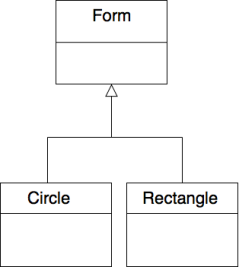

Upcasting and Downcasting
Downcasting
The downcasting is to cast an object of type A (super-class) to an object of type B (sub-class)
1
int main()
2
{3
Form *f = new Form();
4
FormColor *fc = (FormColor*) (f);
5
fc->display();
6
}
Output :
1
I'm a form !
2
I'm a color !
3
red: 0 green: 0 blue: 0
Upcasting
The upcasting is to cast an object of type B (sub-class) to an object of type A (super class)
1
2
3
int main()
4
{5
//Colored form creation6
FormColor fc(10,10,10);
7
Form f = (Form) fc;
8
f.display();
9
}
Output :
1
I'm a form !
Limitations
Consider the diagram below :

1
2
3
4
5
6
7
class Rectangle : public Form
8
{9
public : 10
Rectangle(Point2D min, Point2D max);
11
~Rectangle();12
13
//Getters14
Point2D getMin() const;
15
Point2D getMax() const;
16
17
//Setters18
void setMin(Point2D min);
19
void setMax(Point2D max);
20
21
//Overriding method22
void display();
23
24
//Overriding method25
float area();
26
27
private : 28
Point2D min;
29
Point2D max;
30
};
31
1
2
3
4
5
Rectangle::Rectangle(Point2D min, Point2D max)
6
{7
this->min = min;
8
this->max = max;
9
}
10
Rectangle::~Rectangle()
11
{12
}
13
Point2D Rectangle::getMin() const
14
{15
return this->min;
16
}
17
Point2D Rectangle::getMax() const
18
{19
return this->max;
20
}
21
22
void Rectangle::setMin(Point2D min)
23
{24
this->min = min;
25
}
26
void Rectangle::setMax(Point2D max)
27
{28
this->max = max;
29
}
30
void Rectangle::display()
31
{32
std::cout << "I'm a rectangle !" << std::endl;
33
std::cout << "I'm defined by two points : ";
34
this->min.display();
35
this->max.display();
36
}
37
float Rectangle::area()
38
{39
return 2*fabs(this->min.getX()-this->max.getX())*fabs(this->min.getY()-this->max.getY());
40
}
41
Consider the code below :
1
2
3
4
5
int main()
6
{7
std::vector<Form*> forms;
8
Rectangle *R = new Rectangle(Point2D(-1,-1),Point2D(1,1));
9
Circle *C = new Circle(Point2D(0,0),1);
10
11
forms.push_back(R);
12
forms.push_back(C);
13
14
for(unsigned int i=0;i<forms.size();i++)
15
forms[i]->display();
16
}
Output :
1
I'm a form !
2
I'm a form !
How to execute the good display method for each item of the collection ?
Solution : virtual methods !